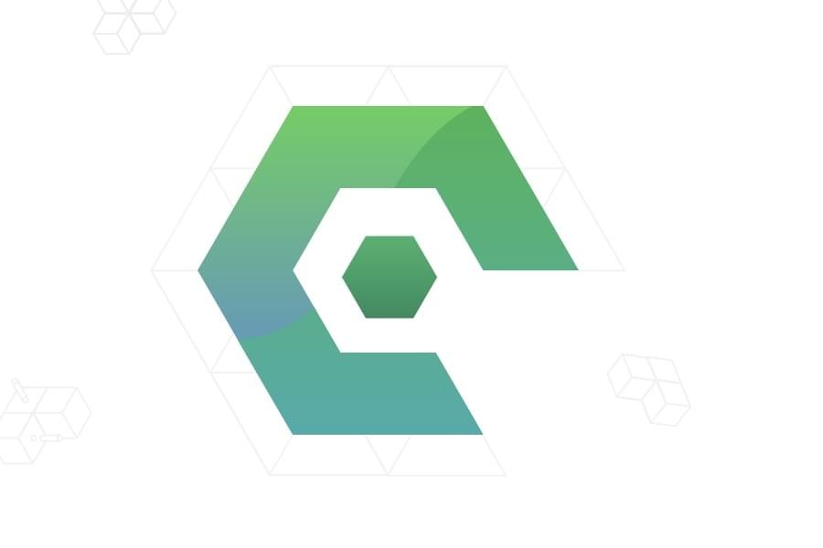
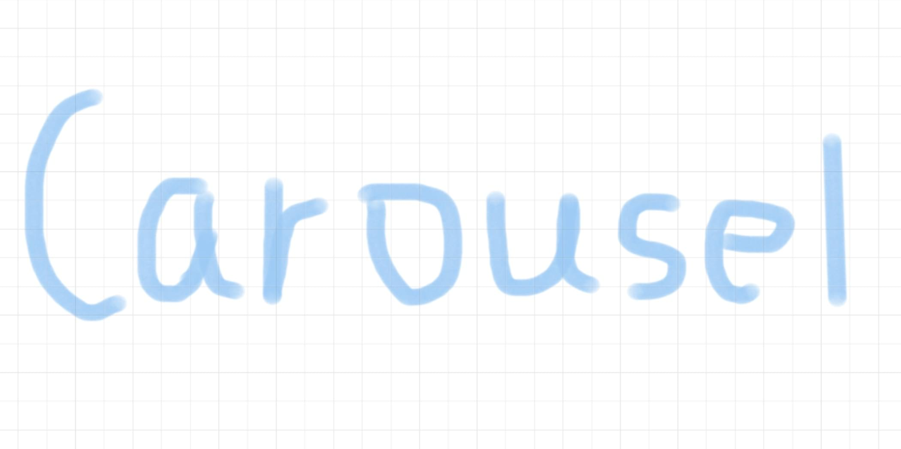

MySQL 入门笔记 📒
工作需求学习一下 MySQL 数据库
发布于: 字数: 2.5k 标签:
使用 Codemagic 持续部署 Flutter 应用

发布于: 字数: 988 标签:
为 Flutter 应用添加搜索功能
使用
SearchDelegate给 Flutter 应用添加搜索功能发布于: 字数: 1.3k 标签:
Flutter 创建自定义路由过渡动画
Flutter 应用进行路由跳转的时候有默认的过渡动画，但是自定义的跳转动画会让应用更具特色
发布于: 字数: 1.4k 标签:
Egg.js 上传接口开发总结

总结一下之前用 Egg.js 开发的文件上传接口的任务
发布于: 字数: 2.2k 标签:
使用 Flutter 实现一个走马灯布局

走马灯是一种常见的效果，本文讲一下如何用
PageView在Flutter里实现一个走马灯发布于: 字数: 1.7k 标签:
分享两道面试题
前几天遇到两个前端面试题，要写代码的那种，然后我都没做对…记录一下
发布于: 字数: 601 标签:
使用 FFmpeg 转换视频格式
用 B 站下载助手 下载下来的视频格式是
flv，用 QuickTime 看不了也不能导入 iMovie 进行编辑，所以需要转换一下视频格式。在搜索了很多视频格式转换工具后，发现它们大多底层是用 FFmpeg 这个开源工具进行转换的，所以为什么不直接用FFmpeg它本身呢发布于: 字数: 810 标签:
对 Egg.js 进行单元测试
优秀的代码需要有单元测试进行质量保证，每个测试用例都给应用的稳定性提供了一层保障，本文说一下如何对使用 egg.js 写的接口进行单元测试
发布于: 字数: 746 标签:
Docker ARG vs ENV
构建 Docker 镜像的的时候有两种环境变量
ARG和ENV, 一种是在运行 build 命令时通过--build-arg参数设置的 build-time variables 以及通过在dockerfile里面设置ENV指令配置的环境变量。发布于: 字数: 379 标签: